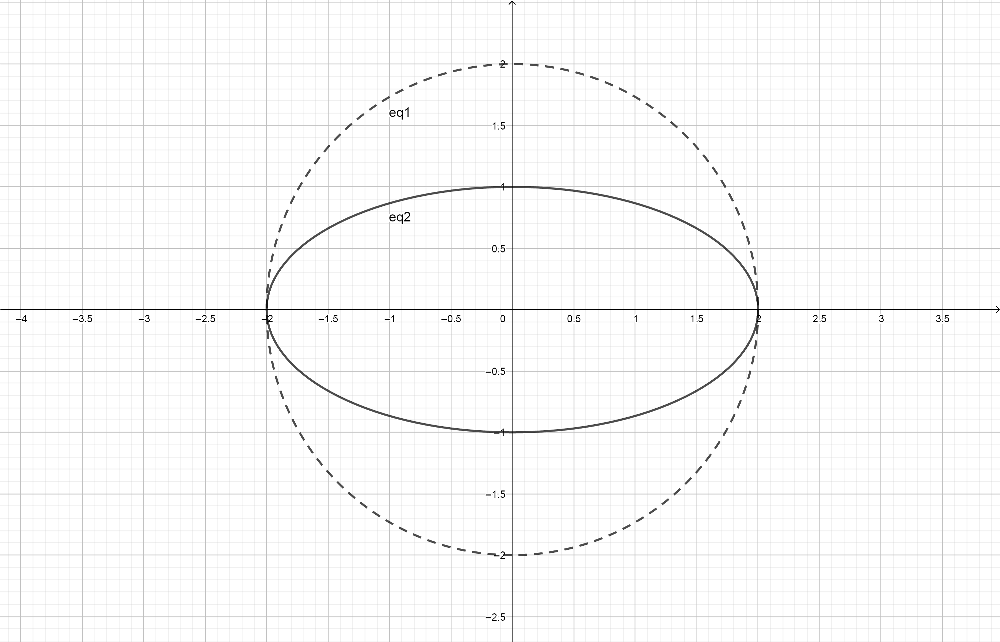

压扁一个圆并走进椭圆世界
椭圆是啥？根据高中课本上的定义，它是平面上到两个定点（焦点）距离为常数的点的轨迹。但是不会真的有人认为我们的祖先给椭圆整了这么一个认真的数学定义吧。事实上椭圆就是个压扁了的圆嘛。
现在我们来压扁一个圆。嗯，首先找到受害者： \[ x^2 + y^2 = 4 \] 如果要将其压扁之，我们可以试试，嗯，把它上面所有点的纵坐标变为原来的一半吧。当纵坐标变为原来一半方程仍然成立的话，我们可以找到新方程：\(x^2 + 4y^2=4\). 仔细一看，这不是很容易就能化成原来课本上证明了半天的椭圆标准方程么： \[ \frac{x^2}{4}+y^2=1 \]
我们来欣赏一下新的图形：

我们可以看到椭圆的长半轴即为原来圆的半径，短半轴则是被我们压过的半径。先辈们将方程化为： \[ \frac{x^2}{a^2}+\frac{y^2}{b^2}=1 \] 这样我们就能很好的找到椭圆的长轴长 \(a\) 和短轴长 \(b\) 了。另外我们可以看到圆与两个坐标轴各有两个交点，这就是它的顶点，x轴上的为 \((\pm a,0)\), y轴上的为\((0,\pm b)\).
以上仅作为引子，接下来回到关于椭圆的实际内容。标准方程什么的我就不证明了，课本一翻都有。
椭圆的定义与标准方程
椭圆的各参数的关系： \[ c^2=a^2-b^2 \] 椭圆的对称性：根据椭圆的标准方程 \[ \frac{x^2}{a^2}+\frac{y^2}{b^2}=1 \] 可知将 \(-x,-y\) 代替 \(x,y\) 时方程仍然成立，所以椭圆上的点关于 \(x\) 轴，\(y\) 轴和原点的对称点都在椭圆上。
例 1-1
- 求过点\((2,-\sqrt{2})\),\((-1,\frac{\sqrt{14}}{2})\)两点的椭圆的标准方程
没啥好说，待定系数法即可，设标准方程： \[ Ax^2+By^2=1 \] 代入两点坐标可得： \[ \left \{ \begin{array}{c} 4A+2B=1 \\ A+\frac{7}{2}B=1 \end{array} \right. \] 解得： \[ A=\frac{1}{8},B=\frac{1}{4} \] 那么它的标准方程就是： \[ \frac{x^2}{8}+\frac{y^2}{4}=1 \] 在这里我们一般设 \(A,B\) 而不是长短轴长 \(a,b\). 这样可以避免讨论椭圆焦点的位置，并且计算更方便。
例 1-2
- 求过点\((\sqrt{3},-\sqrt{5})\)并与\(\frac{y^2}{25}+\frac{x^2}{9}=1\)有相同焦点的椭圆方程
有相同焦点，我们知道它的焦距\(c\)与这个椭圆相同，且焦点在y轴上。那么，\(c=4\)，且椭圆过点，可得： \[ \left \{ \begin{array}{c} \frac{3}{b^2}+\frac{5}{a^2}=1 \\ c^2=a^2-b^2=4^2 \end{array} \right. \] 解得： \[ a^2=20,b^2=4 \] 由椭圆焦点在\(y\)轴，可得椭圆方程可得： \[ \frac{y^2}{20}+\frac{x^2}{4}=1 \] 除此之外我们也可以用椭圆上点到两焦点距离之和为 \(2a\) 来解出。这样可以避免求解方程，但有时当给出坐标带有根号时可能给计算带来困难。
例 1-3
- P为椭圆\(\frac{x^2}{12}+\frac{y^2}{3}=1\)的一点，\(F_1、F_2\)是椭圆焦点，\(\angle F_1PF_2=60°\),求\(\triangle F_1PF_2\)的面积
解决这样的焦点三角形面积的时候可使用公式： \[ S=b^2\cdot tan \frac{\theta}{2} \] 下面予以证明：
设椭圆方程为： \[ \frac{x^2}{a^2}+\frac{x^2}{b^2}=1 \] \(M\) 是椭圆上任意一点，则根据余弦定理有： \[ |F_1F_2|^2 = |MF_1|^2+|MF_2|^2-2|MF_1||MF_2|\cdot cos \theta \] 根据椭圆的定义可知：\(|F_1F_2|^2=2c\) 且 \(|MF_1|+|MF_2|=2a\)，即： \[ (|MF_1|+|MF_2|)^2=|MF_1|^2+|MF_2|^2-2 \cdot |MF_1| \cdot |MF_2|=4a^2 \] 代入可得： \[ 4c^2=4a^2-2|MF_1|\cdot|MF_2|-2|MF_1|\cdot|MF_2|\cdot cos \theta \] 化简得： \[ |MF_1| \cdot |MF_2|=\frac{2b^2}{1+cos \theta} \] 由三角形面积公式： \[ S=\frac{1}{2} \cdot |MF_1| \cdot |MF_2| \cdot sin \theta \] 得： \[ S=b^2 \cdot tan \frac{\theta}{2} \]
椭圆的范围与最值
椭圆上到中心距离最小的点是短轴的两个端点，最大的是长轴的两个端点，椭圆上的点到焦点的距离范围为\([a-c,a+c]\)，下面予以证明。
例 2-1
设椭圆方程为： \[ \frac{x^2}{a^2}+\frac{y^2}{b^2}=1 \] 焦点为 \(F(c,0)\)，椭圆上任意一点 \(P(x,y)\).
根据两点距离公式有： \[ |PF|=\sqrt{(x-c)^2+y^2} \] 设 \(sin\theta=\frac{y}{b},cos\theta=\frac{x}{b}\)，则： \[ |PF|=\sqrt{(asin\theta-c)^2+b^2cos^2\theta} \] 由 \(b^2=a^2-c^2\)，得： \[ |PF|=\sqrt{(asin\theta-c)^2+(a^2-c^2)cos^2\theta} \] 化简得： \[ |PF|=a-csin\theta \] 由 \(sinθ\in[-1,1]\)，可得 \(|PF|\in[a-c,a+c]\).
椭圆的离心率
椭圆的离心率 \(e\) 可以帮助我们了解椭圆的扁平程度。它代表了长轴一定时焦点离开中心的程度。它是焦距与长轴长的比，计算公式如下： \[ e=\frac{c}{a} \] 另外如果我们知道 \(a,b\)，也可以用以下公式： \[ e^2=(\frac{c}{a})^2=\frac{a^2-b^2}{a^2}=1-\frac{b^2}{a^2} \] 求 e 时我们通常需要寻找 \(a,b,c\) 之间的关系，并将其整理为关于 \(a,c\) 的齐次方程来求解。
例 3-1
- 设 \(F_1,F_2\) 是椭圆E:\(\frac{x^2}{a^2}+\frac{y^2}{b^2}=1\)的左右焦点，\(P\) 为直线 \(x=\frac{3a}{2}\) 上的一点，\(\triangle F_2PF_1\) 是底角为 \(30^\circ\) 等腰三角形，求 \(E\) 的离心率。